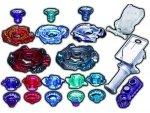

Ultimate Reshuffle Set L-Drago Ver.
TAKARA-TOMY released this set on November 20th, 2010 for approximately 3780 yen.
| Ultimate Reshuffle Set L-Drago Ver. | |
|  | |
| Number: | BB-98 |
|---|---|
| System: | Metal Fight Beyblade |
Contents
With this Set, TAKARA-TOMY's intent was to provide equipments to build upon the original Meteo L-Drago LW105LF (nicknamed Violet Dragon of Absorption), notably by introducing two new Clear Wheels for use only with Meteo: L-Drago II Assault Ver. (nicknamed Blue Dragon of Asssault) and L-Drago II Rush Ver. (nicknamed Red Dragon of Barrage) The release date of this Set also coincided with the winter holidays, creating an obvious perfect gift at parents' disposition, along with BB-97 Beyblade Reshuffle Set Perseus Ver.
Contents
- 3 Segment Launcher Grip (White Ver.)
- Beylauncher L (Clear Ver.)
- Metal Face Custom Ver. (Purple)
- L Drago II Absorb Ver. (Purple)
- L Drago II Assault Ver.
- L Drago II Rush Ver.
- Meteo (Red and Black recolor)
- Meteo (Blue recolor)
- LW105 (Clear Blue Ver.)
- DF105 (Light Blue Ver.)
- 125 (Orange Ver.)
- 105 (Purple Ver.)
- 85 (Turquoise Ver.)
- LF (Clear Blue Ver.)
- LRF (Light Blue Ver.)
- SF (Orange Ver.)
- RF (Purple Ver.)
- XF (Turquoise Ver.)
Overall
In the past, thanks to the great number of useful parts included, this Set was a welcomed release in the competitive community. However, as the metagame evolved, all of these parts have been outclassed by numerous other parts. The two new L Drago II Clear Wheels are nothing compared to the spin-stealing abilities the original version (Absorb Ver.) has, and LRF, while always a top-tier Attack Bottom, can be obtained in more worthwhile Sets. The same can be said about the Beylauncher L, Launcher Grip and Metal Face Custom Ver.: although those included in this Set come in special colors, they can each be found individually or along with the regular Meteo L Drago Starter for less. This Set should therefore only be purchased for collection purposes.
Gallery
-
Package Front
Other Versions
- Black L-Drago Assault Ver. - CoroCoro Beyblade World Domination Book exclusive